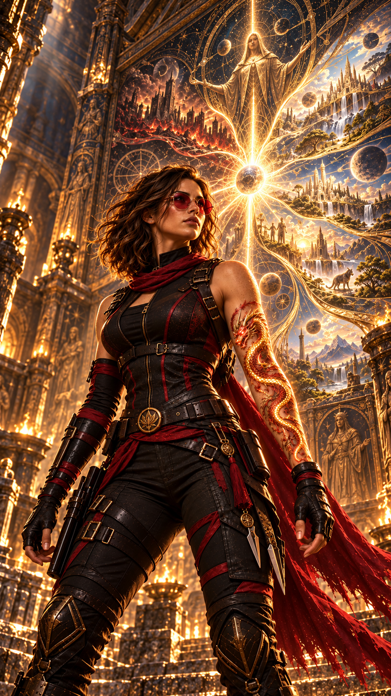
Hope reste encore quelques minutes devant les fresques.
Anna.
La fiole.
Les Anciens.
L’Équilibre.
Trop de questions se bousculent dans son esprit.
Mais une certitude finit par s’imposer.
— Allez…
Elle inspire profondément.
— Il faut sortir d’ici.
Elle regarde une dernière fois l’immense cavité.
— Mais je reviendrai.
Ça, elle en est certaine.
Cet endroit n’est pas une simple grotte.
Plus elle l’observe, plus elle en est convaincue.
Certains passages sont naturels.
D’autres semblent avoir été façonnés.
Préparés.
Organisés.
Comme si quelqu’un avait voulu créer un parcours.
Un chemin.
Hope lève les yeux vers les fresques.
— Pourquoi personne ne vous a trouvées avant moi ?
Elle réfléchit.
Puis regarde son bras.
Le dragon.
Elle pense au phénix apparu récemment dans son dos.
Une hypothèse lui vient.
Et si cet endroit avait été fermé pendant des siècles ?
Pas seulement caché par la roche.
Verrouillé.
En attente de quelqu’un portant les deux marques.
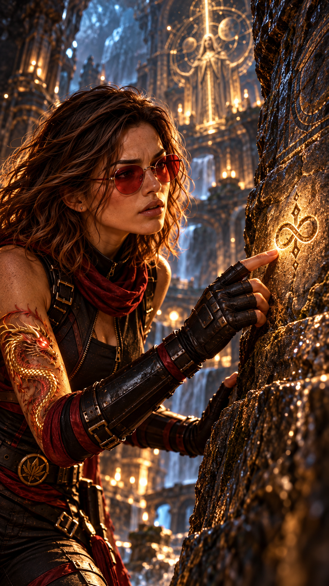
Hope recommence à examiner les parois.
Longuement.
Certains symboles lui sont désormais familiers.
D’autres restent parfaitement incompréhensibles.
Puis son regard s’arrête.
Un signe.
Simple.
Presque insignifiant.
Hope s’en approche.
Elle fronce les sourcils.
— Je connais ça…
Elle passe doucement ses doigts dessus.
Rien.
Le dragon ne réagit pas.
Le phénix non plus.
Pourtant, quelque chose la dérange.
Puis l’image lui revient.
Anna.
Près de son oreille.
Cette petite marque.
Une forme proche de l’infini.
Hope recule d’un pas.
— Non…
Ce n’est pas exactement le même symbole. Mais la ressemblance est troublante.
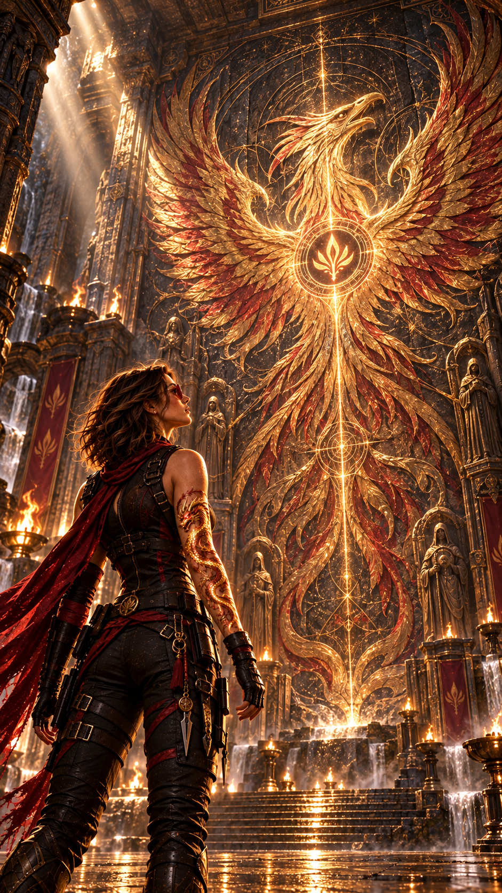
Son regard traverse la pièce.
Sur la paroi opposée, elle aperçoit la même forme.
Mais cette fois…
elle se trouve au centre d’un immense phénix gravé dans la roche.
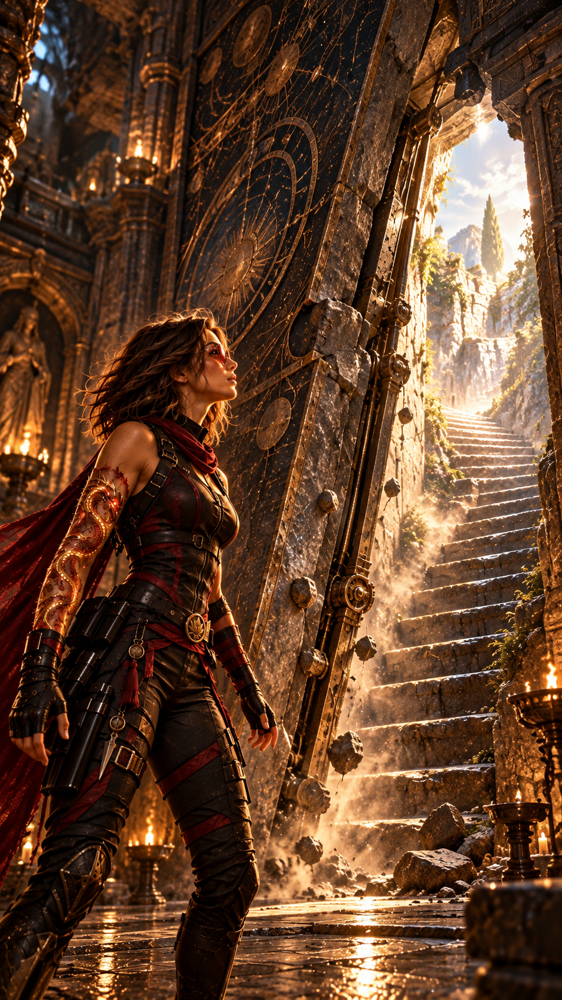
Hope tend la main droite.
La main du dragon.
Elle touche la pierre.
Instantanément, le dragon s’illumine.
Un grondement sourd traverse la cavité.
Une partie de la paroi commence à basculer.
De la poussière tombe du plafond.
Une ouverture apparaît.
Derrière :
un escalier.
Étroit.
Abrupt.
Il monte vers l’obscurité.
Hope sourit.
— Je savais bien que vous aviez prévu une sortie.
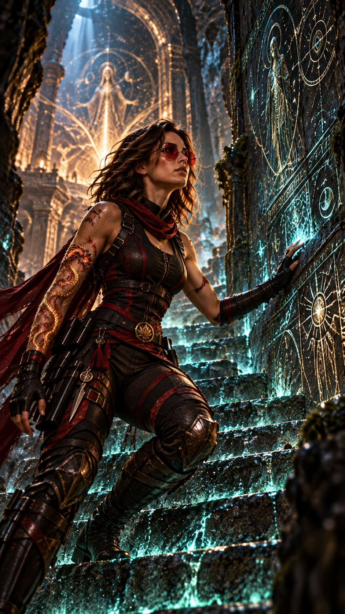
Elle commence à monter.
Dès qu’elle pose le pied sur la première marche, plusieurs symboles s’illuminent autour d’elle.
Une lumière phosphorescente se propage progressivement le long des parois.
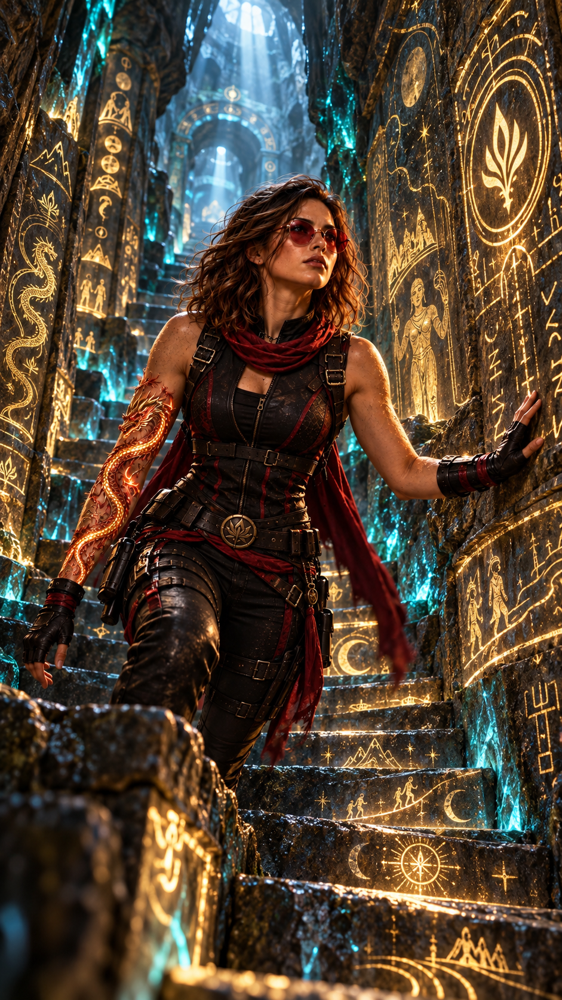
Hope continue.
Une autre inscription s’illumine.
Le corps est un passage. Prends-en soin. Mais n’oublie pas ce qui le traverse.
Plus loin :
Ce que tu appelles une fin peut n’être qu’un commencement.
Hope sourit légèrement.
— Vous aimiez beaucoup les énigmes, apparemment.
Elle poursuit.
La difficulté ne punit pas toujours. Parfois, elle prépare.
Puis :
Ne crains pas ce que tu peux comprendre.
Et enfin, presque au sommet :
Là où existe le déséquilibre naît toujours une possibilité de choix.
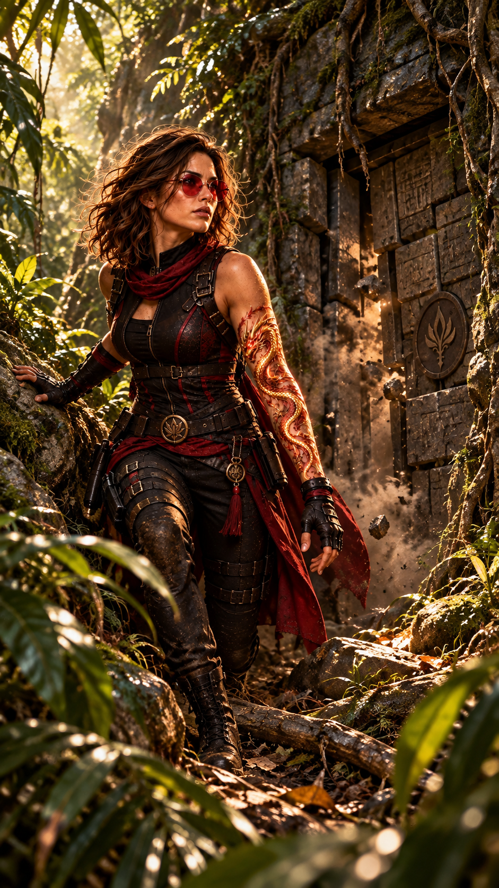
Après un long effort, elle atteint enfin le haut de l’escalier.
Son corps est encore douloureux.
La chute a laissé des traces.
Puis la lumière naturelle apparaît devant elle.
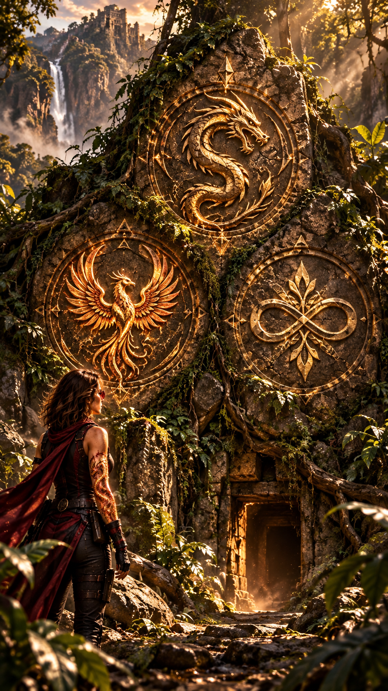
À peine Hope est-elle sortie que le passage commence à se refermer.
— Attends !
Trop tard.
La paroi reprend sa position initiale.
En quelques secondes, il ne reste plus qu’une masse rocheuse parfaitement banale.
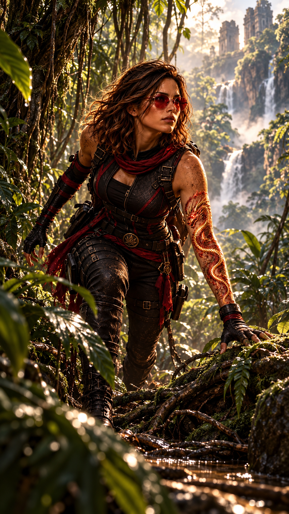
Hope se tourne vers la forêt.
La végétation est dense.
Sauvage.
Elle ne sait pas exactement où elle a émergé.
Ni combien de kilomètres le courant souterrain lui a fait parcourir.
Rien.
Pas de réseau.
— Évidemment.
Hope commence à marcher.
Son instinct lui dit de rester prudente.
Amy a survécu à la chute ?
Probablement.
Où ?
Aucune idée.
Est-elle blessée ?
Très certainement.
Est-elle déjà à sa recherche ?
Possible.
Une heure passe.
Puis peut-être deux.
La fatigue commence à revenir.
Puis quelque chose traverse le ciel entre les arbres.
Une silhouette ailée.
L’oiseau revient.
Tourne au-dessus d’elle.
Ses mouvements sont beaucoup trop précis.
Hope plisse les yeux.
— Non…
L’animal descend légèrement.
Ses plumes semblent parfaitement naturelles.
Son comportement, lui, beaucoup moins.
Hope éclate presque de rire.
— Peter…
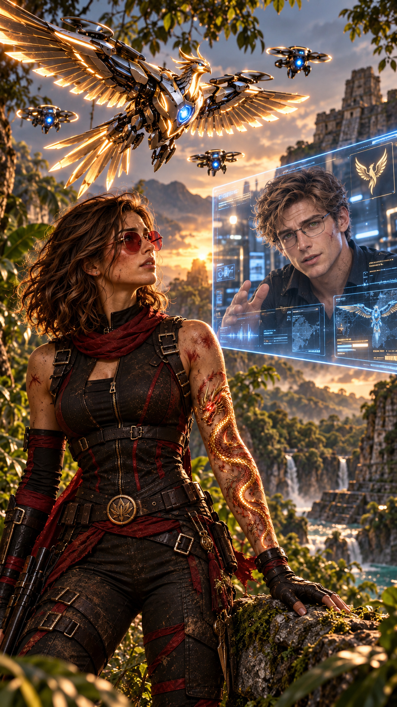
L’oiseau se pose sur une branche.
Il incline la tête.
Comme s’il l’observait.
Quelques secondes plus tard, plusieurs petits drones apparaissent à travers la végétation.
Hope déclenche immédiatement la communication.
Peter apparaît.
Son visage se détend dès qu’il la voit.
— Enfin.
Hope sourit.
— Heureuse de te voir aussi.
— Tu sais depuis combien de temps on te cherche ?
— J’étais légèrement occupée.
Peter la regarde attentivement.
— Tu es blessée ?
— Un peu.
— « Un peu » dans ton langage ou dans celui d’un être humain normalement constitué ?
— Je marche.
— Donc dans ton langage.
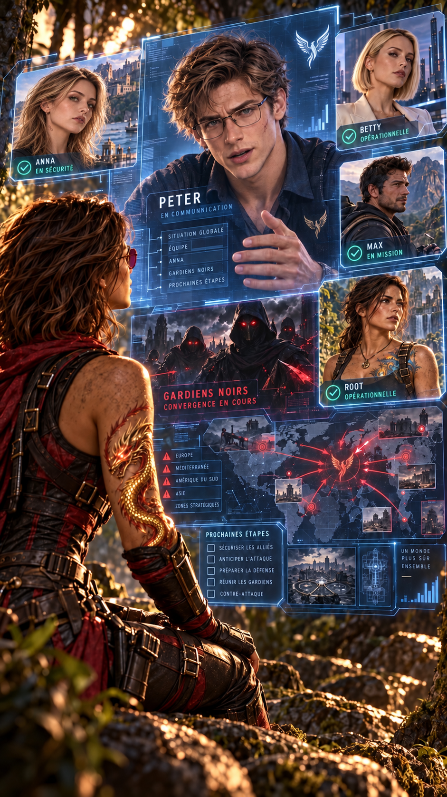
Peter poursuit :
— Tu es localisée.
— Les drones ne détectent actuellement aucune menace immédiate autour de toi.
Puis son visage redevient sérieux.
— Mais reste sur tes gardes.
— Pourquoi ?
Peter hésite.
— Parce que beaucoup trop de gens te cherchent.
Hope demande :
— Betty est avec eux ?
Peter la regarde.
— Pourquoi ?
Hope pense aux fresques.
À la fiole.
À Anna.
— J’ai besoin de lui parler.
Peter remarque immédiatement son expression.
— Qu’est-ce que tu as découvert ?
Hope regarde autour d’elle.
— Pas par téléphone.
— Hope…
— Pas maintenant.
Puis elle ajoute :
— Dis simplement à Betty que lorsqu’on se retrouvera, elle et moi allons avoir une conversation.
— Sur quoi ?
— Sur quelque chose qu’elle aurait dû nous raconter depuis longtemps.
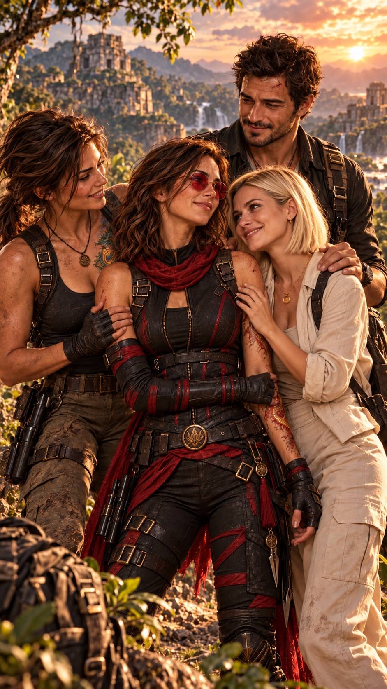
Près de cinquante minutes plus tard, Hope entend enfin un moteur au loin.
Puis des voix.
Elle reconnaît immédiatement celle de Max.
— Je te jure que si elle nous fait encore ce coup-là…
Quelques secondes plus tard, Root apparaît entre les arbres.
Elle s’immobilise.
Hope également.
Pendant une seconde, aucune des deux ne parle.
Puis Root traverse la distance qui les sépare et la serre brutalement dans ses bras.
Hope grimace.
— Doucement…
Root recule aussitôt.
— Tu es blessée ?
— Pas gravement.
Root la frappe immédiatement à l’épaule.
— Aïe !
— Ça, c’était pour nous avoir fait croire que tu étais morte.
— Techniquement, je n’ai rien fait.
Root lève la main une deuxième fois.
Hope recule.
— D’accord, d’accord.
Max arrive derrière elle.
Il sourit.
— Personnellement, j’attendrais qu’elle soit totalement remise avant de la battre.
Hope le prend dans ses bras.
— Anna ?
— Elle va bien.
— Elle a eu peur.
Hope ferme les yeux une seconde.
— Je sais.
Puis Betty apparaît.
Hope se fige.
Betty aussi.
Pendant un instant, aucune des deux ne parle.
Betty finit par s’approcher.
Et contre toute attente, elle serre Hope dans ses bras.
Betty murmure :
— Ne refaites jamais ça.
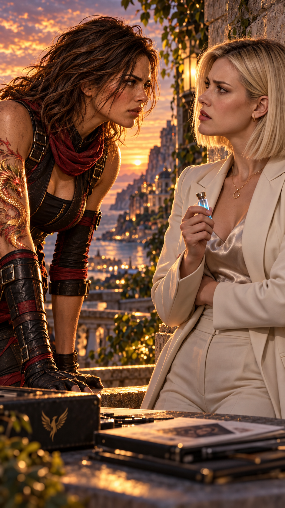
Betty recule.
— Vous êtes blessée.
— Un peu.
— Je vais regarder.
Hope lui attrape doucement le poignet.
— Betty.
Quelque chose dans son ton fait immédiatement changer l’expression de la généticienne.
Root le remarque.
Max également.
Hope regarde Betty droit dans les yeux.
— J’ai découvert quelque chose là-dessous.
Betty ne dit rien.
Hope poursuit :
— Quelque chose concernant les Anciens.
Le visage de Betty se ferme légèrement.
Hope le voit.
— Et une fiole.
Cette fois, Betty pâlit.
Root regarde immédiatement Betty.
Max cesse de sourire.
— Tu savais qu’elle contenait du sang.
Silence.
Betty ne répond pas.
Hope poursuit calmement :
— Et tu ne t’es pas contentée de l’étudier.
Betty reste parfaitement immobile.
Hope murmure :
— Anna a dix-neuf ans.
La respiration de Betty se bloque une fraction de seconde.
Hope comprend.
Elle n’avait jusque-là qu’une hypothèse.
La réaction de Betty vient de la transformer en quelque chose de beaucoup plus sérieux.
Root regarde Betty.
— Betty…
Hope ne la quitte pas des yeux.
— Quand on sera en sécurité, tu vas me raconter exactement ce que tu as fait avec cette fiole.
Betty baisse légèrement les yeux.
Puis regarde Hope.
— Pas ici.
Hope acquiesce.
— Non.
Elle jette un regard vers Root et Max.
Puis revient vers Betty.
— Mais cette fois…
pas de mensonge.
Betty ne répond pas.
Et ce silence suffit à inquiéter tout le monde.